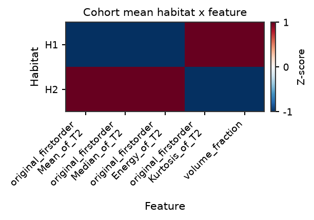
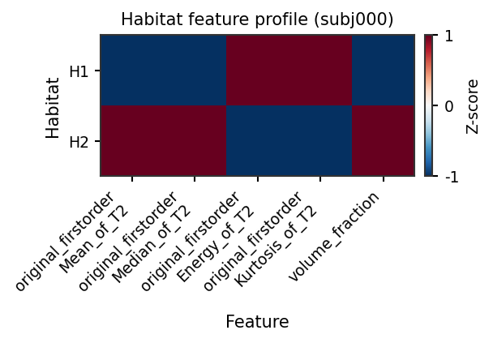
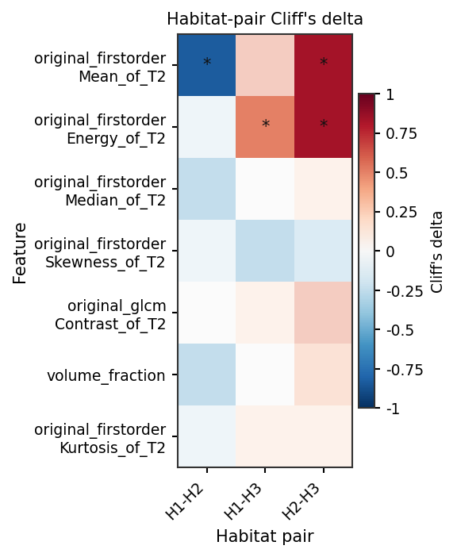
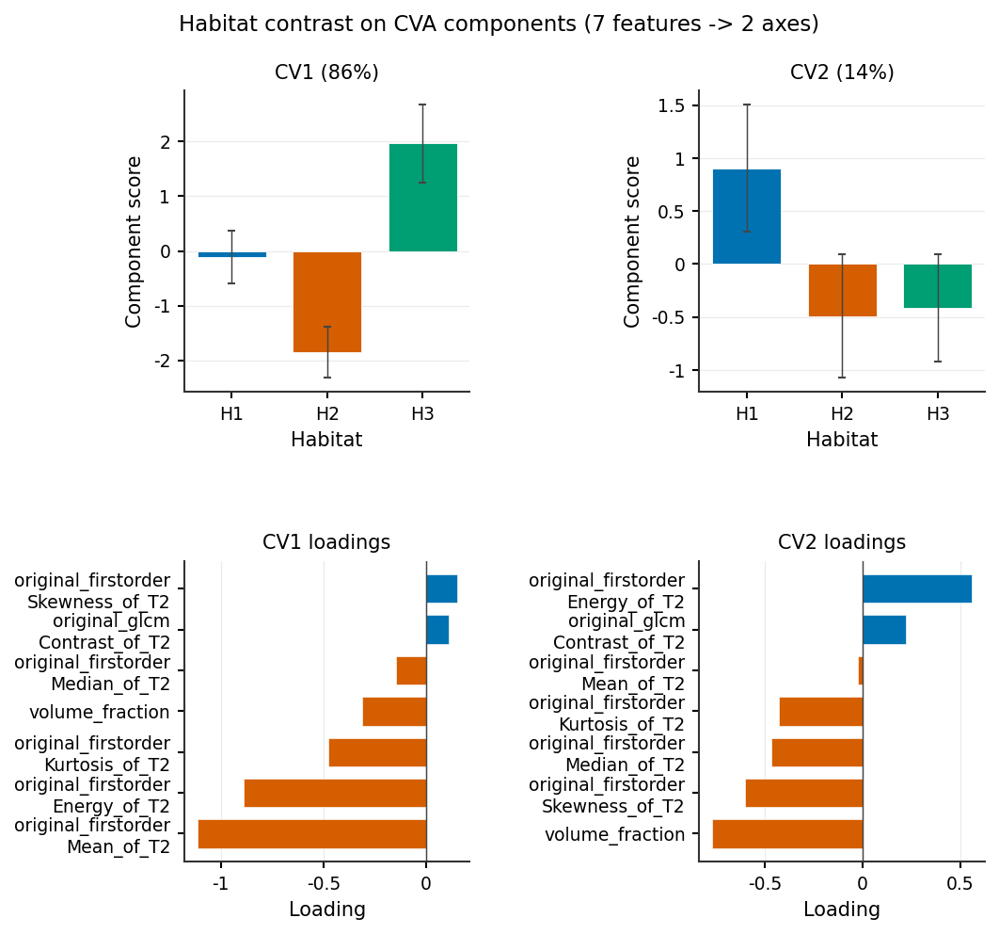
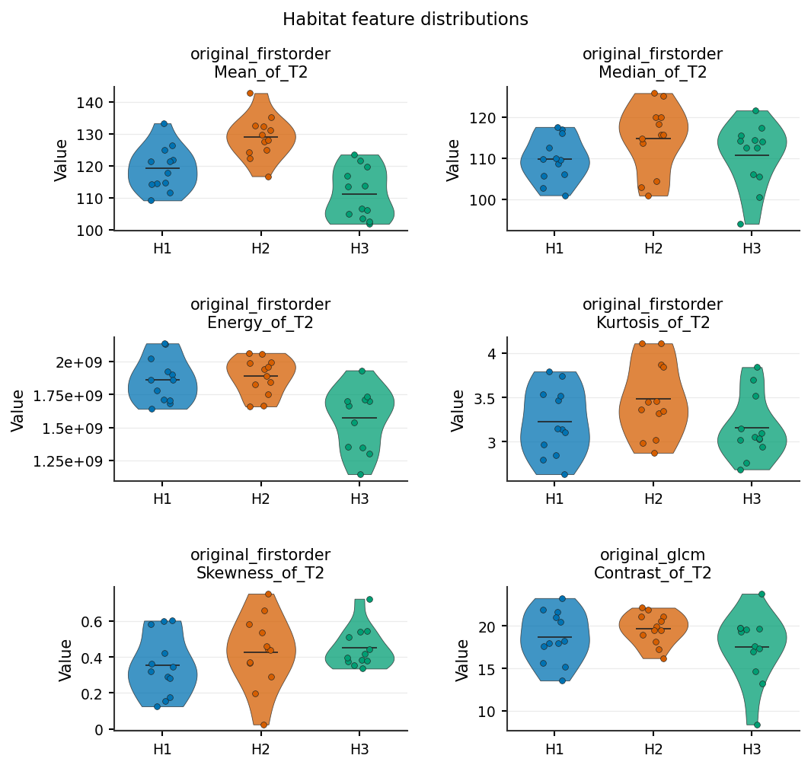
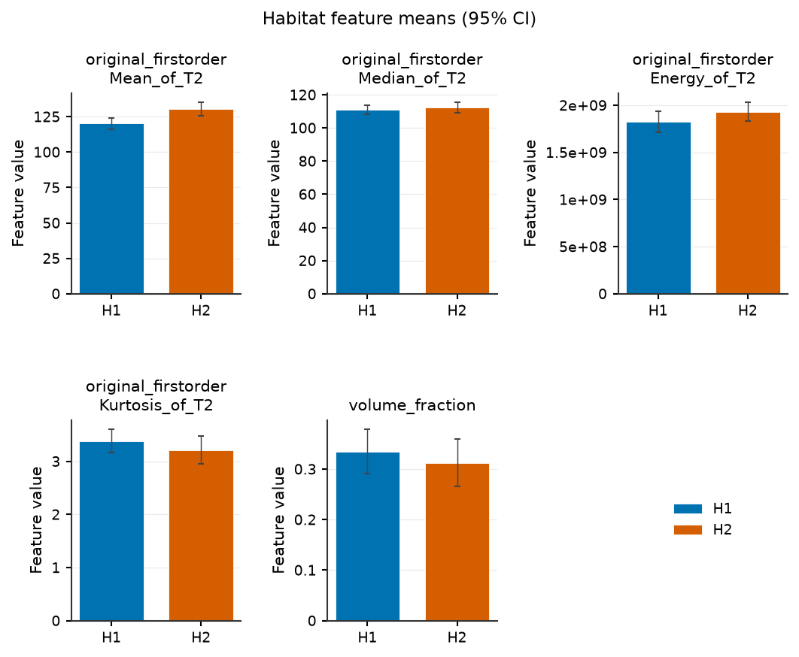

Whole / Each Habitat Radiomics
whole_habitat
Output
whole_habitat_radiomics.csv
Definition
PyRadiomics run on the multi-label habitat map itself: the habitat label
image is passed as both image and mask to PyRadiomics, so voxel
intensities are habitat label IDs (not original MR/PET values). Parameters:
params_file_of_habitat (optional; bundled habitat preset →
habit/resources/radiomics/parameter_habitat.yaml when omitted).
Feature definitions follow PyRadiomics Feature Reference
and the IBSI Phase 1 digital-phantom table on Traditional Radiomics.
Default settings match PyRadiomics execute() (see PyRadiomics alignment
on that page).
Output columns
Column pattern |
Description |
|---|---|
|
PyRadiomics feature names (no modality suffix) |
(excluded) |
Columns whose names contain |
Implementation
habit/compat/engines/habitat_extraction/habitat_features/builtin_plugins.py
(WholeHabitatPlugin) → habitat_radiomics.py
each_habitat
Output
habitat_{k}_radiomics.csv— one file per habitat index k = 1 … K (K =n_habitatsfrom config orhabitats.csv)habitat_count.csv— binary flagshas_habitat_1…has_habitat_K
Definition
For each habitat index k, PyRadiomics is run on the original preprocessed
image with the multi-label habitat map as mask and label=k (voxels
outside label k are excluded). Uses params_file_of_non_habitat (roi
preset), not params_file_of_habitat. Files are written for every
k in 1 … K even when a subject’s map lacks that label (empty ROI → NaN /
error handling per subject).
Feature definitions follow PyRadiomics Feature Reference
and the IBSI Phase 1 digital-phantom table on Traditional Radiomics.
Default settings match PyRadiomics execute() (see PyRadiomics alignment
on that page).
Output columns
habitat_{k}_radiomics.csv:
Column pattern |
Description |
|---|---|
|
One column per PyRadiomics feature × image modality |
(excluded) |
Columns whose names contain |
habitat_count.csv:
Column |
Description |
|---|---|
|
|
Implementation
habit/compat/engines/habitat_extraction/habitat_features/builtin_plugins.py
(EachHabitatPlugin) → habitat_radiomics.py. v1
EachHabitatRadiomicsFeatures
uses one union-bbox crop and the native C multi-label path per modality;
binWidth stays per habitat (union_bin=False).
Compare habitats (cohort or one subject)
The wide each_habitat table is one row per subject. To argue that
habitats are distinct – the figure a reviewer expects – melt it and
contrast habitats across the cohort (paired Cliff’s delta + BH-FDR).
The same objects also describe one subject (differences without p-values).
Tens-to-hundreds of texture features: draw a habitat x feature heatmap
and the default features x pair Cliff’s \(\delta\) heatmap
(top-k by max \(|\delta|\) when the bank is large). Pass
pair=(a, b) for the single-pair lollipop. If that heatmap would be
too tall, plot_habitat_feature_components() shows the
same contrast on a few CVA/PCA component scores (not a 2-D embedding).
Violins / bars are for a shortlist, not the full bank. Bars are one
panel per feature (independent y-axis) so Energy and
volume_fraction are not forced onto one linear scale.
Runnable gallery (synthetic stand-in table; swap table for your
each_habitat extract):
python docs/source/examples/scripts/habitat_feature_compare_demo.py
from habit.habitat_features import compare_habitat_features, to_habitat_feature_panel
from habit.viz import (
plot_habitat_feature_bars,
plot_habitat_feature_components,
plot_habitat_feature_effect,
plot_habitat_feature_heatmap,
plot_habitat_feature_violin,
)
panel = to_habitat_feature_panel(table) # wide each_habitat FeatureTable
cmp = compare_habitat_features(panel) # cohort if table has >= 2 subjects
fig = plot_habitat_feature_heatmap(cmp) # overview (z-scored)
fig = plot_habitat_feature_effect(cmp) # features x pair Cliff's delta
fig = plot_habitat_feature_effect(cmp, pair=(1, 2), top_k=20) # one pair
fig = plot_habitat_feature_components(cmp) # CVA contrast when the heatmap is too tall
fig = plot_habitat_feature_violin(cmp, max_features=6)
fig = plot_habitat_feature_heatmap(cmp, subject_id="subj001") # one subject
fig = plot_habitat_feature_bars(cmp, subject_id="subj001", max_features=6)
compare_habitat_features(..., subject_id=...) restricts the panel
first. Pairwise p_value / q_value are NaN when only one subject
remains.
Runnable gallery (synthetic stand-in table; swap table for your
extract): Habitat feature contrast. Graph topology
columns (single_h* / pair_h*_h*) can share the joined table but
do not melt through this API.
{kind=link}

Cohort mean heatmap, z-scored per feature
(plot_habitat_feature_heatmap()).
{kind=link}

One-subject profile
(plot_habitat_feature_heatmap()).
{kind=link}

Default features x pair Cliff’s delta (star = BH q < 0.05)
(plot_habitat_feature_effect()). With dozens of
features the heatmap keeps the top-k by max \(|\delta|\). If
that heatmap would be too tall, compare habitats on a few CVA/PCA
components instead.
{kind=link}

Same contrast, shown on 2 CVA components (use this when there are
dozens of features)
(plot_habitat_feature_components()).
{kind=link}

Per-feature distributions; box + strip when n < 5
(plot_habitat_feature_violin()).
{kind=link}

One panel per feature, independent y-axis
(plot_habitat_feature_bars()).